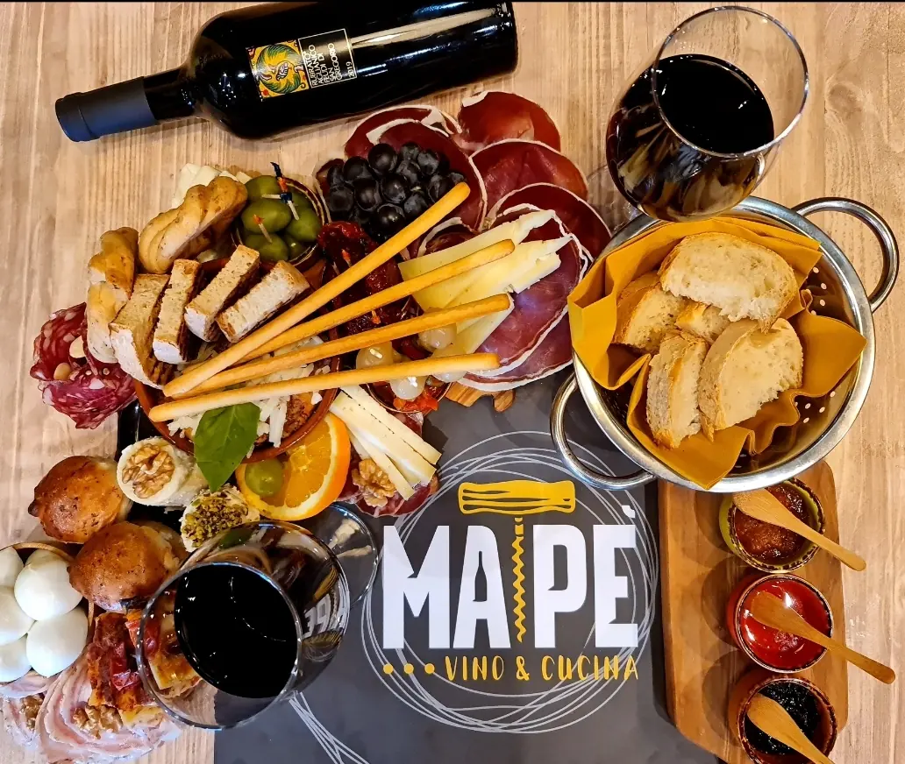
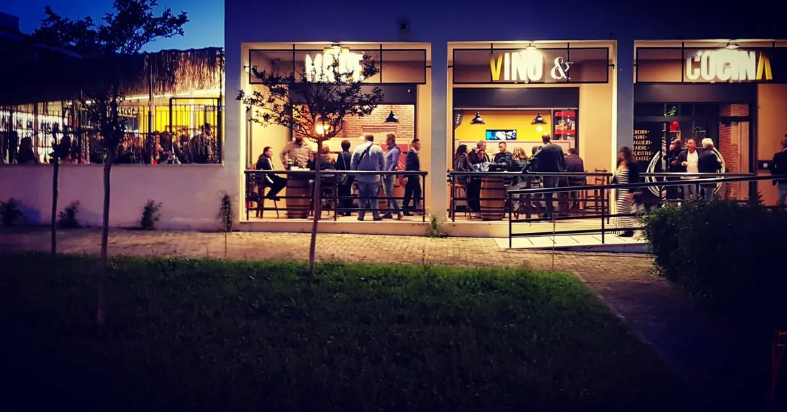

Un tagliere di salumi, formaggi e fritti con il vino rosso.

Ristorante e vineria · Lusciano
MapèVino & Cucina
Ristorante e vineria a Lusciano, in Via Pasquale Grimaldi, 46.
4,7490 recensioni GoogleVia Pasquale Grimaldi, 46, 81030 Lusciano, CE

Il locale di sera con le vetrate illuminate.
Via Pasquale Grimaldi, 46, Lusciano. 4,7 su 5 su Google, 490 recensioni.
Recensioni
Cosa dicono i clienti
4,7 su 5 · 490 recensioni su Google. Qui sotto alcune, riportate senza modifiche (i nomi sono abbreviati).
★★★★
Esperienza davvero eccellente da Mapè Vino & Cucina! Locale curato, accogliente e con un'atmosfera piacevole. Si percepisce subito l'attenzione per la qualità delle materie prime. Il personale è gentile, disponibile e sempre attento a far sentire gli ospiti a proprio agio. Un posto dove gusto, professionalità e ospitalità si incontrano. Tornerò sicuramente e lo consiglio a chi cerca un'esperienza gastronomica di qualità.
★★★★★
Abbiamo cenato in questo ristorante e, che dire, è stata un'esperienza davvero fantastica!
Il servizio è stato eccellente: Giuseppe e Marino si sono dimostrati cordiali e professionali, attenti a ogni dettaglio.
La presentazione dei piatti è stata davvero curata, con una qualità all'altezza delle aspettative: ingredienti freschi e abbondanti, preparati al momento con cura e fantasia. Si vede chiaramente la passione che c'è dietro ogni proposta.
L'ambiente è accogliente e molto piacevole: una luminosità soffusa e una leggera musica di sottofondo contribuiscono a creare un'atmosfera rilassante e confortevole, ideale per trascorrere una bella serata.
Lo consiglio vivamente a chiunque cerchi una cena di qualità in un contesto elegante ma informale.
Ci torneremo sicuramente!
★★★★★
Taglieri ottimi vengono serviti non solo con dei salumi e formaggi buonissimi ma anche con degli assaggi caldi come parmigiana, pasta, focacce, casatiello....tutto ottimo ( sottaceti buonissimi). Complimenti tagliere da prendere al 101%
★★★★★
Mapè Vino e Cucina, situato nella zona di Lusciano vicino ad Aversa, è un vero gioiello enogastronomico che merita tutte e cinque le stelle senza alcun dubbio. Ho avuto il piacere di cenare qui con amici in una serata indimenticabile, dove ogni dettaglio ha contribuito a rendere l’esperienza perfetta: dall’ambiente caldo e raffinato, con arredi curati che creano un’atmosfera intima e conviviale ideale per cene romantiche o uscite in compagnia, al servizio attento e professionale del personale, sempre gentile e pronto a consigliare abbinamenti impeccabili tra piatti e vini campani eccellenti. La cucina è il vero punto di forza, con materie prime freschissime e di altissima qualità che si trasformano in piatti alla brace succulenti, taglieri originali a forma delle regioni d’italia ricchi di salumi e formaggi, e specialità regionali rivisitate con maestria, offrendo porzioni generose, sapori autentici e presentazioni curate che conquistano al primo assaggio. La carta dei vini è un altro highlight, con una selezione interessante che spazia da etichette locali classiche a opzioni più originali, perfette per accompagnare ogni portata. A completare il tutto, un parcheggio comodo e la possibilità di prenotare facilmente rendono il locale accessibile e pratico. Tornerò presto e lo consiglio vivamente a chiunque voglia gustare la vera essenza della cucina napoletana in un contesto di calore e convivialità assoluta.
★★★★★
Ottimo locale, arredato con gusto e molto particolare.
Antipasto ricco e con prodotti di qualità.
Primo piatto veramente ottimo, abbiamo assaggiato la lardiata (Top!) e le orecchiette crema di friarielli e salsiccia ,ottime!
Secondo con bistecca di carne e salsiccia alla brace buonissime e patate al forno . Per finire una cheesecake veramente buona.
Personale attento e cordiale.
Consigliato vivamente!
Ci ritorneremo provare i loro taglieri!
Orari e dove siamo
Vieni a trovarci
| Lunedì | Chiuso |
|---|---|
| Martedì | 18:00–24:00 |
| Mercoledì | 18:00–24:00 |
| Giovedì | 18:00–24:00 |
| Venerdì | 18:00–24:00 |
| Sabato | 18:00–02:00 |
| Domenica | 12:30–14:30 · 18:00–23:30 |
Mapè - Vino & Cucina
Via Pasquale Grimaldi, 46, 81030 Lusciano, CE
334 103 7045
Orari della scheda Google: nei festivi possono cambiare, chiamate per conferma.
Via Pasquale Grimaldi, 46, 81030 Lusciano, CE
Contatti
Scrivici
Un messaggio su WhatsApp, o una telefonata: vi risponde Mapè.